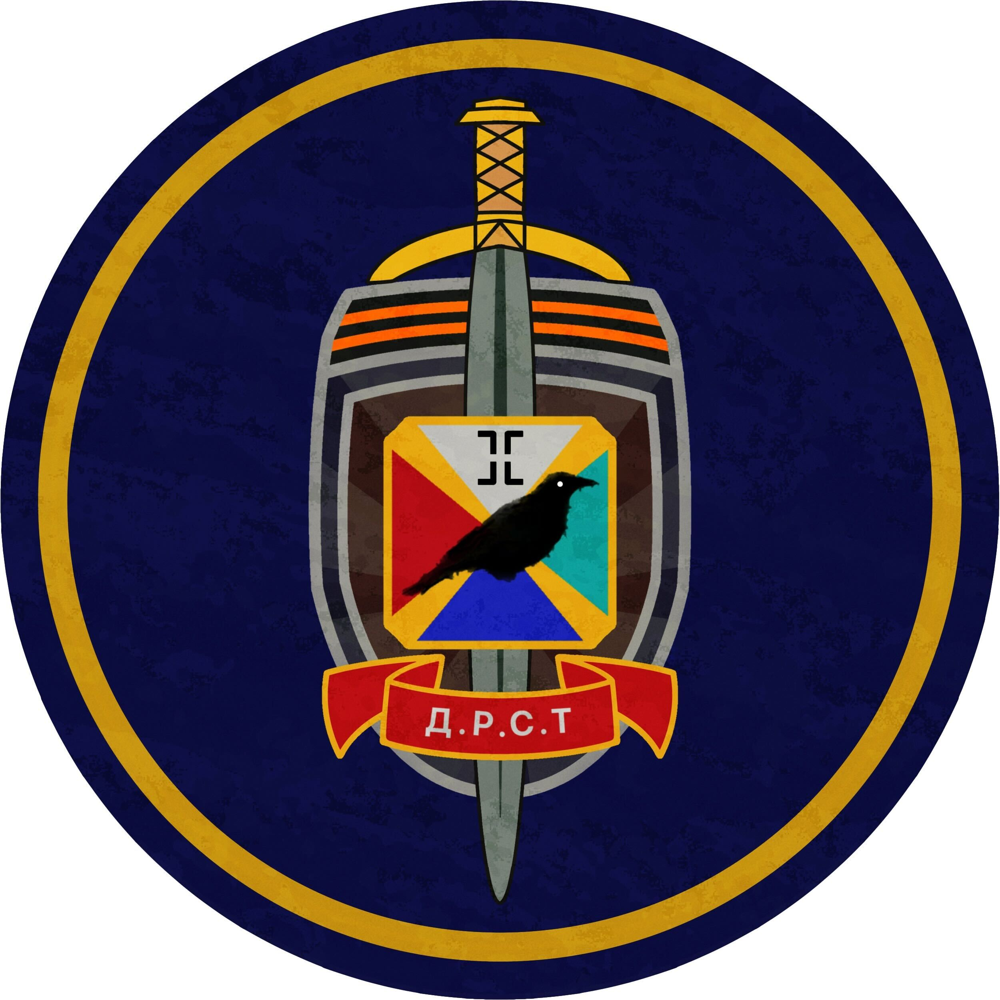

見澤天昭
今の人生はコフィニズム時代

趣味とか好きなものをですねあげていこうかと
ロシア/ソ連(たぶんこの分野に関しては学校内で右に出る人はいないかと)
TheCoffinofAndyandLeylye(とてつもなくお勧めの食人兄妹愛のホラゲーです)
アイシングクッキー作り(進められて始めたばっかです)
あとは無難にイラストですかね
死神坊ちゃんと黒メイドって漫画いいっすよこれ
ORIGINAL
自由キニューラン共和国
うーん特に書くことはない